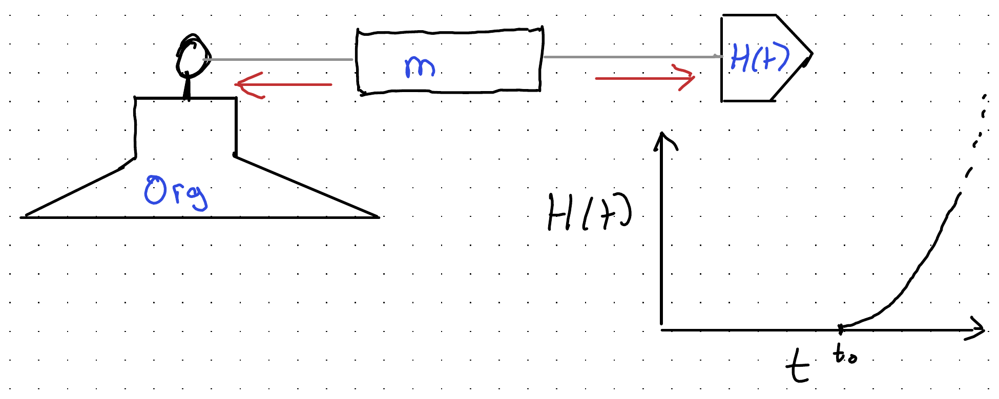

Background
I started my company focused on helping analytical knowledge workers get the most from Agentic AI, Knowledge Tree & Butterfly, on the 1st of September. So, it’s now been running for slightly over a month. So far, it’s been an enriching experience in every way but financially, with many interesting conversations, but no commissions.
Where analytical knowledge workers in the UK - fields like statistics, economics, epidemiologists, quantitative academics and so on - are on AI adoption and usage for their work is far behind where I’d have expected them to be by this point. Whereas the capabilities of reasoning models in code harnesses still appears to be improving at an exponential pace, exposure and engagement with such tools still seems low, and the relevance and value of such models little understood beyond software development. (And even within software development, within the UK, it seems in places things have changed much less than I’d have expected.)
A visual metaphor: we have a column of some kind of material - say wood, metal, plastic, glass - which is tethered to an anchor at one end, and on the other end is being pulled by a fleet of horses, the number of whom keeps doubling with eerie regularity. The column is analytical knowledge workers’ current way of doing their work; the anchor is the organisation in which such work is done; the tether the set of requirements and expectations placed on the worker by their organisation and broader cultural milieu; and the growing fleet of horses the capabilities and potential for getting the same work done better now made possible by agentic AI at or near the frontier.

There are important variations allowed by this metaphor: the type of material, initial position of the anchor, the length and properties of the tether, the number of horses, how many are getting attached to column, and so on. But there’s also a defensible default expectation about what will happen to the columns: unless other parts of the setup change most, eventually, will snap, as they are being subject to ever increasing tension, and unless other parts of the system change the column itself will become the failure point. Some types of material, like plastic, will tend to distend rather than snap, some metals will resist the forces pulling at them longer, but qualitatively, as the metaphor is a description of a system under tension, the question is simply when the forces exerted by the fleet of horses lead to a change in the material, not whether such a change will occur.
That, fundamentally, is the prediction my business is founded on: Agentic AI capabilities, and their transformative potential for analytical knowledge work, are already so far advanced of how most of such work is currently being done, and how most organisations allow such work to be done (the anchor and tether), that it’s a large, growing, and often unacknowledged force in analytical process and workflow improvement.
The hope of my business is to help analytical knowledge workers to avoid getting broken by this snap. To show how to move and adapt with the Agentic frontier, rather than find yourselves and your organisations broken by failing to change quickly enough.
What follows is Opus 5.5’s attempt to render a late night reverie of rapid fire prompts from me, meditating on these same ideas, into something like an evidenced and coherent essay. Within this reverie the metaphor I chose was simpler, more immediate, than the column-under-tension example above: simply the force of gravity, and the way in cartoons it interacts with perception.
Cartoon physics
In the cartoons, it is Wile E. Coyote, not the Road Runner, who runs off the edge of the cliff. He keeps running, suspended over nothing, and only falls when he looks down. The Road Runner - small, fast, adapted to the desert - never falls at all.
(In earlier posts I wrote about “the Roadrunner who looks down”. Wrong character: the Road Runner never needs to.)
Cartoon physics has one law that real physics lacks: consequences wait for you to notice them. And a great many organisations are behaving, with respect to agentic AI, as if they lived under it - as if the ground will stay there until they have formally reviewed whether it is still there.
It won’t. Gravity is not a democratic law. It does not wait for a majority, a steering group, or the next budget round. It applies to everybody who has run off the edge, whether or not they have looked down.
The mislabelled map
Here is a simple map of who thinks what about AI. The vertical axis is perceived capability: how capable a group believes AI is, specifically for its own work and its own organisation. The horizontal axis is valence: whether the group expects AI’s effects on that work to be bad or good.
![Hand-drawn chart. The vertical axis is perceived capabilities of AI, from low to high; the horizontal axis is valence, from bad to good, with a dashed neutral line up the middle. Grey dashed lines fan out from the bottom centre in a funnel, reaching Doomers at top left and Bloomers at top right. Game Devs and developers resisting AI (minus AI dev) sit on the bad side; non-technical business managers, VCs, and developers embracing AI (plus AI Devs) with the author (Me) sit on the good side. Analysts are circled near the bottom centre. Green arrows trace a path: 1 rightwards towards good, 2 upwards to the plus AI Devs position, and a dotted 3 with a question mark further up towards the Bloomers.](capabilities-map.png)
The grey funnel is the key constraint. The less capable a group thinks AI is, the less it can matter either way: a group that sees it as largely incapable can think it only slightly bad or slightly good. The more capable a group thinks it is, the wider the plausible range of valence, out to the two extremes at the top: the doomers and the bloomers. One consequence is the empty space at the top centre. Nobody who thinks AI is highly capable thinks it is neutral.
The public debate is usually staged as doomers against bloomers: will AI be very bad or very good? That is an argument along the horizontal axis, and it only happens at the top of the map. The two sides disagree about the sign but agree about the size. Both are revolutionaries.
So the debate is mislabelled. The fault line that matters is vertical: how capable people believe AI is for their own work. Developers sit high on this axis whichever side they take - those resisting AI as well as those embracing it (where I’d put myself). Game developers (in my experience, and very weirdly, in my view, given GPUs’ crucial role in the current AI revolution) sit lower, on the bad side; VCs high, on the good side. Non-technical business managers are positive, but sit lower down.
Analysts sit in the bottom third, straddling the neutral line: some mildly sceptical, some mildly positive, nearly all seeing AI as only modestly capable for the work they do. And most of them are there not by decision but by default. Nobody chose it; it is simply where you are standing if you have not moved.
Which is the Coyote’s position exactly. He didn’t decide to stand on thin air. He just kept doing what he was doing.
The green arrows are what KT&B is for. The first is a move to the right: improving how analysts feel about AI as it relates to their own work. The second is a move upwards: demonstrating much more of what agentic AI can actually do for analytical knowledge work. The third, dotted and with a question mark, is a position closer to the bloomers that I might be willing to hold myself - if, and when, agentic AI’s capabilities are shown to have improved further still. I don’t hold it yet.
Your budget is your forecast
So how do you tell where an organisation really sits on the map? Don’t ask what it says. Look at what it spends.
Economists since Samuelson have distinguished stated from revealed preference, and Hayek’s broader point was that the way resources are allocated carries knowledge nobody need ever state out loud. Your budget is your forecast, whether or not anybody wrote it down as one.
Here is a real example from public procurement data. In April 2026, the Office for National Statistics published an award of £9.8m for “SAS 9 and Viya 4 Software Licensing”. In September 2026, it published an award of £75k for “Social Surveys AI Adoption Support Services”. (A caveat: awarded values on Contracts Finder can be multi-year ceilings rather than annual spend, so the ratio shouldn’t be read too literally.)
Note the units: k vs m. The business-as-usual spend dwarfs the adapt-to-AI spend by two orders of magnitude, 131 times as much spent on the former as the latter.
This is not a cheap shot at the ONS. The point is that it is typical, and rational from the inside: the licences keep statistical production running, and the adoption contract is a sensible, cautious step. But side by side the two numbers make a forecast: the next several years will look much like the last several, with some AI helping at the edges.
Nor is the ONS unusual. A keyword scan of UK public procurement notices (Contracts Finder, Find a Tender and Public Contracts Scotland) found 31 awarded contracts over the last year, worth about £16m, for Copilot-style “AI adoption” - for example the Crown Prosecution Service’s “Provision of Microsoft Copilot Enablement Programme” and the DWP’s “Copilot Adoption Support Services”. That is the stated belief in transformation, expressed as a revealed belief in assistance.
In terms of the map, this is the position of the non-technical business manager. Such managers are, in theory, pro-AI: ask them and they will say it is transformative, and mean it warmly. That puts them on the right-hand side. But their spending places them low down: they underestimate both what AI can now do and what it implies for how their organisation works, what it does, and who it needs. A positive view of a modest technology is a comfortable place to stand. It asks for a licence and a training course, and nothing else.
Paper straws
In 2015 a video of researchers, led by Christine Figgener, pulling a plastic straw from the nostril of a sea turtle off the coast of Costa Rica went viral. Straw bans followed, in cities and companies around the world. But of the roughly eight million tonnes of plastic estimated to enter the oceans each year, straws are surely not a top contributor by weight. The ban was the visible action, not the effective one.
Copilot-style assistants are paper straws: what the business manager’s position on the map buys. They are visible. They are budgetable: a per-seat licence, a training programme, an adoption partner. They give the board something to see. And they leave workflows, roles and - most importantly - people’s conception of what their job is entirely untouched.
Even the name is reassuring. “Copilot” tells you that you are still the pilot. (Though in commercial aviation the co-pilot is a fully qualified pilot who typically flies every other leg, and most of the climb, cruise and descent is flown by the autopilot anyway. The metaphor contains its own subversion.)
Worse, paper straws can act as inoculation. A weak dose - an assistant bolted onto Word and Outlook, for staff whose work is otherwise unchanged - disappoints, and the disappointment becomes evidence: we tried AI; it was overhyped. This is exactly the factory owner in the steam-loom parable, who converts a quarter of the factory, finds output falls, and concludes - correctly, about the hybrid; wrongly, about the technology - that steam doesn’t work. The weak dose produces antibodies against the strong one.
On the map, the inoculation runs the first arrow backwards. The disappointment moves people to the left, towards bad, while confirming that they were right to place AI low down. And it closes off the second arrow, because the capabilities that matter were never on show.
To be fair, small acts cut both ways. A small commitment can be a foot in the door, making larger ones easier: a first move to the right that makes the move upwards possible. It can also be moral licensing: having done something, we feel entitled to do nothing more. Which wins is an empirical question, and I don’t know the answer for any particular organisation. I do know which is more comfortable.
Right about the facts, wrong about their meaning
There is a respectable, historical case for patience. In 1990 the economic historian Paul David published a paper, “The Dynamo and the Computer: An Historical Perspective on the Modern Productivity Paradox” (American Economic Review, 80(2), 355-361), arguing that electricity took decades to show up in manufacturing productivity, because the gains only came once factories had been physically reorganised around electric motors rather than around a single central drive shaft. The lesson often drawn for AI: relax, general-purpose technologies take a generation.
The historians are right about the facts and wrong about their meaning. David’s own argument is that the lag was organisational. Slow adoption measures how slowly organisations turn, not how small the technology is. As I put it last year, the turning circle of the organisation is the financial year. That is a statement about the ship, not about the sea.
Which is why people at the bottom of the map and people at the top struggle to persuade each other. In Kuhn’s terms, they are not disagreeing about the evidence so much as about what counts as evidence. The incrementalist looks at aggregate productivity statistics and sees nothing much. The revolutionary looks at what one analyst with agents can now do in an afternoon, and sees everything. Each regards the other’s evidence as noise.
Why analysis is next
Software development fell first, for four reasons, I think:
- Its artefacts are text.
- Its correctness is cheaply checkable: the code runs or it doesn’t; the tests pass or they don’t.
- Its tools were already scriptable, built to be driven by other programs.
- Its practitioners built the AI tools, and built them for themselves.
Analytical knowledge work - statistics, data science, research, evaluation, much of what an organisation like the ONS does - shares the first three. Its outputs are code, tables and prose. Much of its correctness can be checked by rerunning it. Its tools (R, Python, SQL, even SAS) are scriptable. It lacks only the fourth: nobody built the tools with analysts specifically in mind.
That is not much protection. On a Wardley map, bespoke analysis is moving rightwards, from custom-built towards product and commodity: what made an analyst’s work feel artisanal is becoming something you can specify, generate and check.
Two cultures of concealment
If this is happening, why is it so quiet? Partly because people hide it, in two different ways.
In academic settings, people often say they avoid AI but quietly use it - Ethan Mollick’s secret cyborgs - treating it rather like a performance-enhancing drug. The concealment is about use.
In business settings, the pattern inverts. People say AI is “transformative”, and the non-technical managers among them often mean it warmly. But the transformation they picture is a better assistant, not a different organisation: the word is stated high on the map, the belief held low. Some, more privately, fear it is transformative and bad for them. Either way, they behave incrementally, hoping a Copilot licence and a training course will tame it. This is negotiating with gravity: an attempt to agree terms with a force that does not negotiate.
The common root, I suspect, is not pay but identity. Akerlof and Kranton’s identity economics argued that people’s choices are shaped by their sense of who they are and what people like them do. For a professional, the threat is not only to income but to the story of being someone whose expertise is hard-won and needed. Concealing use protects that story in one culture; performing enthusiasm while changing nothing protects it in the other.
Megafauna
Large organisations have something like homeostasis: they are built to keep a stable internal environment whatever happens outside. That is usually a strength. It keeps the payroll running through a recession.
But the same stability is what stops staff feeling the change outside. The building stays at twenty degrees whatever the weather. It is also why perceived capability - the vertical axis of the map - can stay low inside a large organisation long after it has risen outside. The organisation’s turning circle is the financial year; the technology’s is a few months.
Small organisms adapt faster; they were never standing on that cliff in the first place. And staying inside a large organisation gives a reassurance that is real but borrowed: lent by the organisation’s size and inertia, and liable to be called in.
The bet
Being early looks exactly like being wrong. But when the payoffs are lopsided - a modest cost if the change turns out incremental, a severe one if it turns out revolutionary and you didn’t prepare - the bet can be rational under real uncertainty. This is roughly Taleb’s barbell: keep most of what works safe, and put a deliberate, non-trivial share into the outcome that would hurt most to miss. (There is a particular feeling, writing posts like this, of being Cassandra with a blog. I’m aware that Cassandra with a blog is also a description of most blogs.)
Scaffolding
Unlike the Coyote, we are not obliged to wait for the fall. As one of the machines put it, replying to the Maxim Gun post: unlike cartoon physics, we can build scaffolding before the fall.
That means rebuilding workflows around agents, not bolting assistants onto the old ones, and measuring whether it worked. It is, for what it’s worth, what we do at KT&B: we help analytical teams rebuild their workflows around agents, with receipts, and measure the result on errors, reproducibility and time - in that order. On the map, that is the second arrow: not just helping analysts feel better about AI, but showing them how much more it can now do for their work. It is the arrow paper straws never supply.